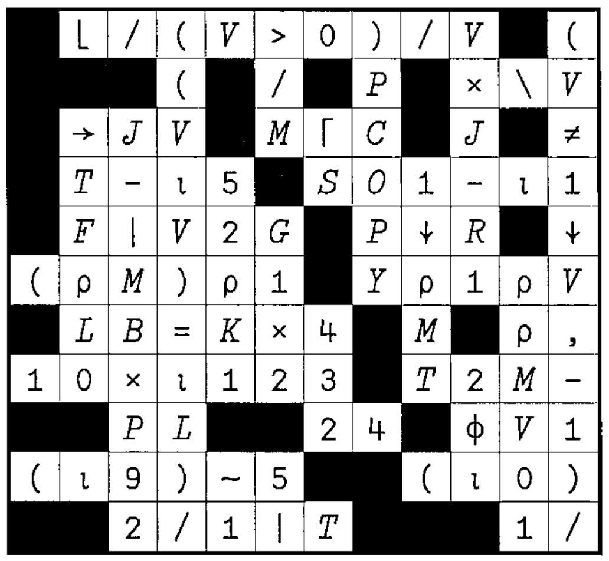
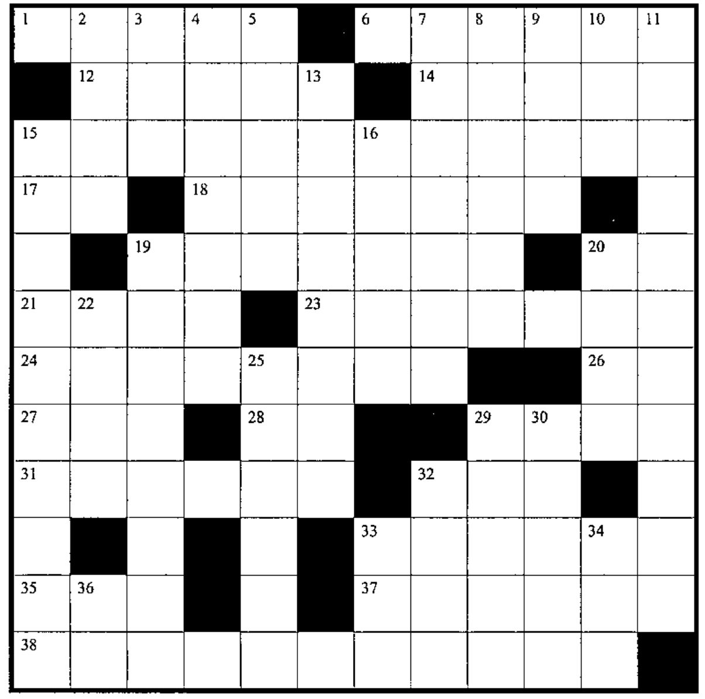

19.4 Solution, Puzzle, and New Crossword
Vector 20:1, page 35
Transcribed from the printed issue; not yet reviewed. Read it in the PDF of the issue, page 35
Solution to Crossword in 19:4¶

Puzzle (from Howard Peelle)¶
NOW I KNOW¶
There are two positive integers, each greater than 1 and less than 100.
Pete knows their product. Serena knows their sum. First, Pete says: “I don’t know what they are.” Then Serena says: “I know you don’t know.” Then Pete says: “So, now I know.” And Serena says: “So do I.” What are the two integers?
This problem has been around for a while in various guises and is usually presented in terms of Mr. P (product) and Mr. S (sum).
I have changed the names to Pete and Serena, in reference to two great tennis players. Solution in the next Vector!
New Crossword¶

Across¶
- Where the active workspace came from
- Coding and testing are ______ in APL than in other languages
- Format the absolute values of the elements in vector
Xcorresponding to1bits in vectorM - Matrix
MATwith vectorEas a new rightmost column - Flag distinct elements (first occurrences) in vector
VA - Conjugate (imaginary portion is negated) of complex number
C(for APL systems with complex number support) - Round elements of
RDSto nearest integers (withX.5down toX) - Do all the elements of
VequalIMP? Atimes piI×DKfor scalarI, bit vectorDK, without multiplyingRB[5+⍳TN]- Current size of the symbol table
×/Iρ*1C[;1]÷C[;2]for two-column matrixCP=0for BooleanPJ2L[____]to getJ2Lin sorted order¯15↑1M[___;]to getMin alphabetic order according to the alphabetA- Name of the
⍕function - Rank (number of dimensions) of
Y - One random number from the set
(U×L+1), (U×L+2), (U×L+3),... (U×L+Y) - How good programmers spend the majority of their time
Down¶
- Display
VCtoWdecimal paces A-S×⌊A÷S- Index in vector
IMof its largest number - Elements in vector
VRVcorresponding to 1s in bit vectorD - Flag the first
Melements ofSthat equal-AM - Index in vector
SAof1÷P5 - Array of 2s, with shape
TT - Vector
Vwith scalarEstuck to its front - Speed, size and __________: the key measures of APL program quality
- Flag elements of
TOP5that match scalarXAD - Average across each row of matrix
D - Local variables in suspension
- Flag leading elements of vector
YCthat are integers - Area of circle of radius
R (+/KS)ρ5for integer vectorKS(~B∊M[12+⍳(ρM)-12])/B- Ranking vector for golf scores
RLI(1 = lowest score) - Add
Nto each element ofJMM - Product of
AOandT - APL is ___ to use
- From the set
⍳G, returnAdistinct random numbers - Length of vector
O